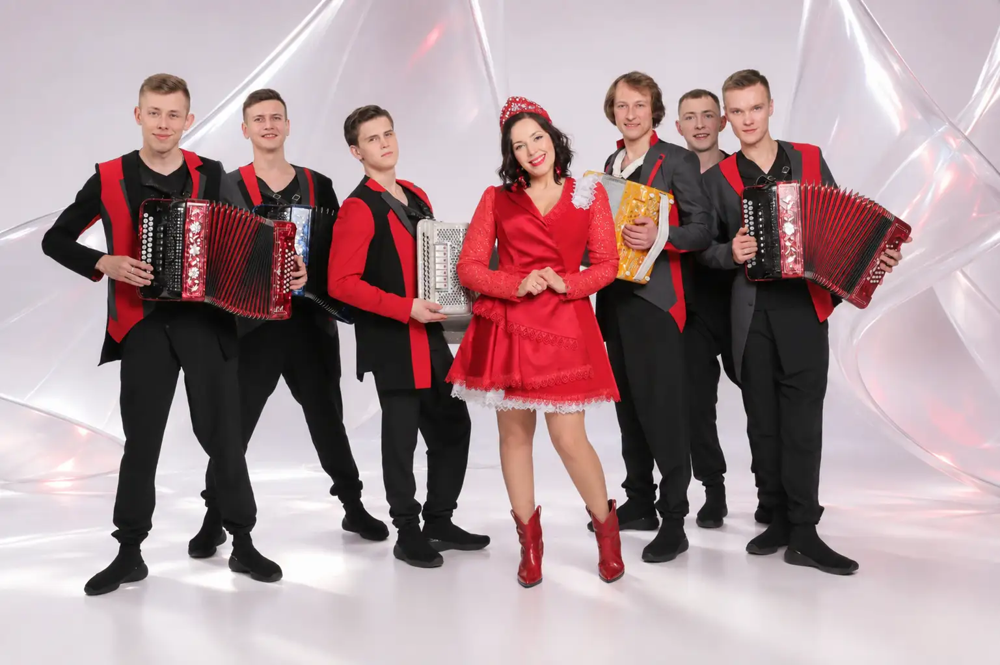

СЕЙЧАС
LIVEБольшой концерт ГармоньDRIVE
Концерт · 55 мин

Музыкальное веб‑телевидение в презентационной MVP‑версии: прямой эфир, телепрограмма, архив и личный кабинет.

Прямой эфир
Телепрограмма работает как интерактивный MVP: выбор канала и программ сохраняется локально в браузере.
Концерт · 55 мин
Документальный цикл · 25 мин
Клипы и премьеры · 40 мин
Выбор редакции · 60 мин
Каналы
В реальном запуске каждый поток может быть связан с HLS/RTMP. В MVP переключение демонстрируется локально.
MVP функционал
Ключевой пользовательский путь доступен без сервера: авторизация, профиль, кабинет, избранное, эфирная и AI‑редактор.
Локальная демо‑сессия и защищённые страницы кабинета.
Плеер, каналы, эфирная сетка, переключение и избранное.
Профиль, напоминания, сохранённые программы и выход.
Добавление файла и демонстрация подготовки передачи к эфиру.